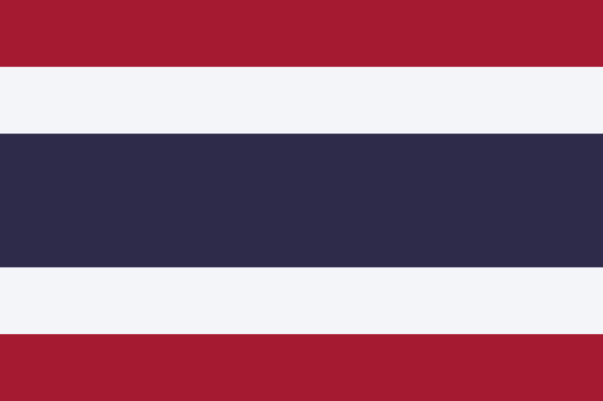
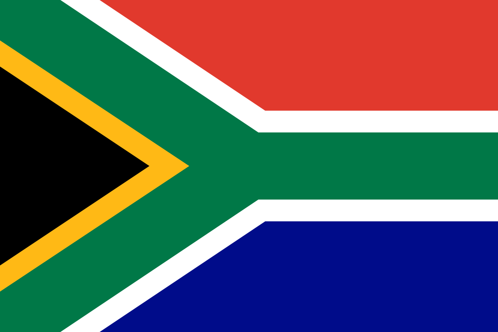

참전국 소개
UN 연합군
6월 25일 새벽 4시 북한의 불법적 남침으로 전쟁이 발발하자 북한의 남침 사실을 보고 받은 미국 트루먼 대통령은 북한의 남침에 대해
반드시 남한을 북한으로부터 막아야 한다고 주장하였습니다. 한국이 공산화되면 다음 타켓은 일본이 될것이고 그렇게 된다면 자유 민주주의를
수호한다는 미국의 신뢰도는 바닥을 치게될것이 분명하기 때문이였습니다. 그렇게 트루먼 대통령은 유엔 안전보장이사회 소집을 지시하였고 UN은
신속히 움직여 북한을 남한을 불법 침략한 침략자로 규정, 북한에게 퇴각요청을 하였으나 북한은 이를 거절하고 맙니다.
어쩔수 없이 무력을 택해야 했던 UN은 곧바로 전쟁 이틀후인 27일 더글라스 맥아더 장군을 UN군 총사령관으로 파병을 결정합니다. 총 21개국으로
파병 16개국, 의료지원 5개국이 지원을 하였고 그외 39개 국이 물자지원을 하였습니다.
파견국
미국

- 참전일 : 1950년 6월 27일
- 병력 : 1,789,000명
- 피해규모 :
- 전사자 : 36,940명
- 부상자 : 92,134명
- 실종자 : 3,737명
- 포로 : 4,439명
6.25 전쟁 파견 국가중 첫번째로 파견을 결정한 국가이자 가장 많은 병력을 지원해준 나라로 북한의 남한을 적화통일 한다는 계획을 보다 적극적으로 막아준 국가 입니다.
당시 미국은 소련과 냉전시기를 돌입하고 있었으며 소련과의 직접적인 충돌은 피하되 공산권 세력이 확장되는것 만은 두고볼 수 없는 지경이였습니다.
공산권 국가인 소련과 중국의 적극적 지지를 받고 남한을 침략한 북한은 남한이 공산화 된다면 다음 타겟은 일본이고 일본마저 공산화가 된다면 다른 아시아권
국가들도 그들의 표적이 될것이 분명하였고 이는 미국의 신뢰가 떨어지는 결과가 발생하기 때문에 미국은 반드시 남한을 북한으로 부터 사수해야 했습니다.
다른나라 보다 월등히 군사력을 지원해준 미국은 그만큼 여러 전투에서 큰 활약상을 펼쳤는데 대표적인 전투가 인천 상륙 작전, 서울 수복 작전, 장진호 전투 등이
있습니다.
영국
- 참전일 : 1950년 6월 29일
- 병력 : 56,000명
- 피해규모 :
- 전사자 : 1,078명
- 부상자 : 2,674명
- 실종자 : 179명
- 포로 : 997명
프랑스
- 참전일 : 1950년 7월 29일
- 병력 : 5,322명
- 피해규모 :
- 전사자 : 269명
- 부상자 : 1,008명
- 실종자 : ?명
- 포로 : ?명
네델란드

- 참전일 : 1950년 7월 19일
- 병력 : 5,322명
- 피해규모 :
- 전사자 : 120명
- 부상자 : 645명
- 실종자 : ?명
- 포로 : 3명
캐나다

- 참전일 : 1950년 7월 28일
- 병력 : 25,687명
- 피해규모 :
- 전사자 : 262명
- 부상자 : 1,008명
- 실종자 : 7명
- 포로 : 12명
터키

- 참전일 : 1950년 7월 19일
- 병력 : 14,936명
- 피해규모 :
- 전사자 : 724명
- 부상자 : 2068명
- 실종자 : 163명
- 포로 : 244명
오스트레일리아
- 참전일 : 1950년 7월 1일
- 병력 : 17,164명
- 피해규모 :
- 전사자 : 339명
- 부상자 : 1,216명
- 실종자 : 3명
- 포로 : 26명
뉴질랜드
- 참전일 : 1950년 7월 30일
- 병력 : 3,794명
- 피해규모 :
- 전사자 : 23명
- 부상자 : 79명
- 실종자 : 1명
- 포로 : ?명
필리핀
- 참전일 : 1950년 9월 19일
- 병력 : 7,420명
- 피해규모 :
- 전사자 : 112명
- 부상자 : 229명
- 실종자 : 16명
- 포로 : 41명
태국
- 참전일 : 1950년 11월 7일
- 병력 : 6,326명
- 피해규모 :
- 전사자 : 129명
- 부상자 : 1,139명
- 실종자 : 5명
- 포로 : ?명
남아프리카 공화국
- 참전일 : 1950년 11월 15일
- 병력 : 826명
- 피해규모 :
- 전사자 : 35명
- 부상자 : ?명
- 실종자 : ?명
- 포로 : 9명
그리스

- 참전일 : 1950년 12월 9일
- 병력 : 4,992명
- 피해규모 :
- 전사자 : 188명
- 부상자 : 543명
- 실종자 : ?명
- 포로 : ?명
벨기에
- 참전일 : 1951년 1월 31일
- 병력 : 3,498명
- 피해규모 :
- 전사자 : 106명
- 부상자 : 336명
- 실종자 : ?명
- 포로 : 1명
룩셈부르크
- 참전일 : 1951년 1월 31일
- 병력 : 83명
- 피해규모 :
- 전사자 : 2명
- 부상자 : 13명
- 실종자 : ?명
- 포로 : ?명
에티오피아
- 참전일 : 1950년 12월 9일
- 병력 : 3,518명
- 피해규모 :
- 전사자 : 122명
- 부상자 : 536명
- 실종자 : ?명
- 포로 : ?명
콜롬비아
- 참전일 : 1951년 6월 15일
- 병력 : 5100명
- 피해규모 :
- 전사자 : 163명
- 부상자 : 448명
- 실종자 : ?명
- 포로 : 28명
의료 지원국
- 스웨덴
- 인도
- 덴마크
- 노르웨이
- 이탈리아
물자 지원국
- 과테말라
- 미얀마
- 이스라엘
- 우루과이
- 코스타라카
- 멕시코
- 도미니카
- 베네수엘라
- 이란
- 온두라스
- 파나마
- 아이슬란드
- 서독
- 월남 임시중앙정부
- 이집트
- 엘살바도르
- 파라과이
- 오스트리아
- 라이베리아
- 사우디아라비아
- 인도네시아
- 자메이카
- 파키스탄
- 캄보디아
- 리히텐슈타인
- 시리아
- 일본
- 대만
- 페루
- 교황청
- 레바논
- 스위스
- 아이티
- 칠레
- 헝가리
- 쿠바
- 모나코
- 아르헨티나
- 에콰도르